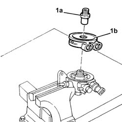

1044D10 fuel heater - r + r
- Path
- Procedures > 10 ENGINE > 1044 FUEL CIRCUIT PUMP/AND DEVICES > 1044D fuel heating device > 1044D10 fuel heater - r + r
- Kind
- repair procedure (removal / refitting; the operation number is the code)
- Applies to
- engines: 2.4 JTD 20v; all production periods
- Interactive page
- https://sloeber94.github.io/elrnDB-a156/en/#/3237881
Applies to: engines: 2.4 JTD 20v; all production periods
 Removing
Removing
 Refitting
RefittingProceed with removal 1016A10 sound-proofing cover - r + r .
Proceed with removal 1044B10 fuel filter assembly - r + r or replace .
Proceed with removal 1044B20 fuel filter filtering element - replace .
1. Undo the fitting (1a) and remove fuel heater (1b).

Applies to: engines: 2.4 JTD 20v; all production periods
Refitting
RemovingPlace the fuel heater back in its housing and secure with the connector.
Proceed with refitting 1044B20 fuel filter filtering element - replace .
Proceed with refitting 1044B10 fuel filter assembly - r + r or replace .
Proceed with refitting 1016A10 sound-proofing cover - r + r .
Topics linked from this page (3)
- 1016A10 sound-proofing cover - r + r
- 1044B10 fuel filter assembly - r + r or replace
- 1044B20 fuel filter filtering element - replace